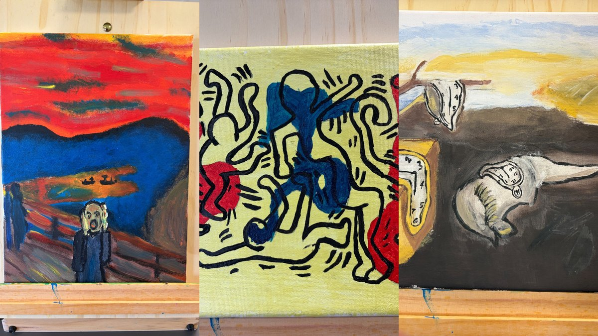

Archivio
Lavori degli studenti
Una raccolta progressiva dei lavori svolti negli anni, organizzata per classe, progetto e attività.

A.S. 2025/2026 • Classe 3A
Lavori d’esame su tela
Una selezione degli elaborati personali realizzati per l’esame conclusivo di Arte e Immagine.
Apri la raccolta →